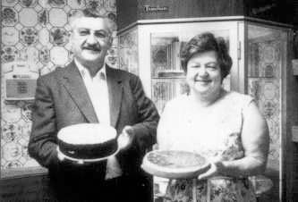

The World Of Cheesecake story begins in Detroit, Michigan in the 1940’s. Evelyn Overton found a recipe in the local newspaper that would inspire her “Original” Cheesecake. Everyone loved her recipe so much that she decided to open a small Cheesecake shop, but she eventually gave up her dream of owning her own business in order to raise her two small children, David and Renee. She moved her baking equipment to a kitchen in her basement and continued to supply cakes to several of the best restaurants in town while raising her family.
In 1972, with their children grown, Evelyn and her husband Oscar decided to pack up all of their belongings and move to Los Angeles to make one last attempt at owning their own business. With the last of their savings, they opened The World Of Cheesecake and began selling Evelyn’s cheesecakes to restaurants throughout Los Angeles. Through hard work and determination their business grew to a modest size and Evelyn was soon baking more than 20 varieties of cheesecakes and other desserts.
